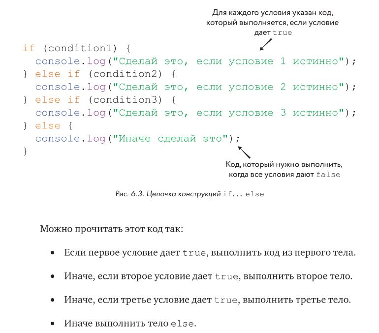

Условия и Циклы
Цикл
for
Условные конструкции
В JavaScript есть два вида условных конструкций — это if и if...else. Оператор if выполняет фрагмент кода,
если какое-то условие истинно (true). А оператор if... else выполняет один фрагмент кода, если условие
дает true, и другой фрагмент в противном случае.
Конструкция if
Cамая простая из управляющих конструкций JavaScript — это if. Она используется, чтобы запускать код, если некое условие истинно (true).
var name = "Николай"
console.log("Привет, " + name);
if (name.length > 6) {
console.log("Ну и длиннющее же у вас имя!");
}
- Cоздали переменную name и присвоили ей значение — строку "Николай".
- С помощью
console.logнапечатали строку "Привет, Николай". - Использовали конструкцию
if, чтобы проверить: длина name больше, чем шесть символов? - Если это так, посредством
console.logвыводим: "Ну и длиннющее же у вас имя!".
Конструкция if состоит из двух частей: условия и тела. Условие должно давать булево значение. А тело — одна
или несколько строк JavaScript-кода, которые будут выполнены, если условие истинно (true).
Конструкция if... else
Оператор if запускает код своего тела, только если условие дает true. Но если вы хотите, чтобы по условию false
тоже что-то происходило, вам нужна конструкция if... else.
Давайте дополним предыдущий пример:
var name = "Николай";
console.log("Привет, " + name);
if (name.length > 6) {
console.log("Ну и длиннющее же у вас имя!");
} else {
console.log("Имя у вас не из длинных.");
}
Этот код делает практически то же, что и раньше, однако, если имя (name) не длиннее 6 символов, он выводит другое, альтернативное сообщение.
Как видно по рис. 6.2, конструкция if... else похожа на конструкцию if, однако у нее целых два тела, между которыми
расположено ключевое слово else. Первое тело будет выполнено, если условие дает true, иначе выполняется код второго тела.
Цепочка из конструкций if... else
Зачастую нужно проверить несколько условий и сделать что-то, если одно из них дает true. Пример: вы пришли в китайский ресторан и выбираете, что бы такое съесть. Больше всего вы любите курицу с лимоном (lemon chicken), и, если она есть в меню, вы ее закажете. Если же ее нет, вы закажете говядину в соусе из черных бобов (beef with black bean). Однако если и это блюдо отсутствует, вы остановитесь на свинине в кислосладком соусе (sweet and sour pork). Наконец, в маловероятном случае, когда нет ни одного из этих блюд, вы закажете рис с яйцом, поскольку знаете, что его подают во всех китайских ресторанах.
var lemonChicken = false;
var beefWithBlackBean = true;
var sweetAndSourPork = true;
if (lemonChicken) {
console.log("Отлично, я буду курицу с лимоном!");
} else if (beefWithBlackBean) {
console.log ("Заказываю говядину.");
} else if (sweetAndSourPork) {
console.log ("Ладно, закажу свинину.");
} else {
console.log ("Что ж, значит рис.");
}

Циклы
Цикл while
Этот цикл снова и снова выполняет код своего тела, до тех пор, пока заданное условие не перестанет давать true. Используя цикл
while, мы имеем в виду следующее: «Продолжай делать это, пока условие дает true. Но если оно даст false, остановись».
Счет овец с помощью while
var sheepCounted = 0;
while (sheepCounted < 10) {
console.log("Посчитано овец: " + sheepCounted + "!");
sheepCounted++;
}
console.log("Хрррр...");
Получили:
var sheepCounted = 0;
while (sheepCounted < 10) {
console.log("Посчитано овец: " + sheepCounted + "!");
sheepCounted++;
}
console.log("Хрррр...");
Посчитано овец: 0!
Посчитано овец: 1!
Посчитано овец: 2!
Посчитано овец: 3!
Посчитано овец: 4!
Посчитано овец: 5!
Посчитано овец: 6!
Посчитано овец: 7!
Посчитано овец: 8!
Посчитано овец: 9!
Хрррр...
undefined
Тело цикла повторяется, пока sheepCounted не примет значение 10, после чего условие становится ложным (false), ведь 10 не меньше 10. И тогда программа переходит к строке, идущей после цикла, — в данном случае на консоль выводится "Хррррр"
Цикл for
Оператор for упрощает создание циклов, устроенных следующим образом: сначала создается переменная, а затем тело цикла выполняется
снова и снова до тех пор, пока условие дает true, причем в конце каждого повтора значение переменной обновляется. Программируя цикл for,
мы создаем переменную, задаем условие, указываем, как должна меняться переменная после каждого повтора, — и лишь затем переходим к написанию тела цикла.
Например, вот как можно считать овец с помощью for:
for (var sheepCounted = 0; sheepCounted < 10; sheepCounted++) {
console.log("Посчитано овец: " + sheepCounted + "!");
}
console.log("Хррррр...");
Посчитано овец: 0!
Посчитано овец: 1!
Посчитано овец: 2!
Посчитано овец: 3!
Посчитано овец: 4!
Посчитано овец: 5!
Посчитано овец: 6!
Посчитано овец: 7!
Посчитано овец: 8!
Посчитано овец: 9!
Хрррр...
undefined
Настройка (var sheepCounted = 0) выполняется до запуска цикла. Как правило, здесь создают переменную для отслеживания количества повторов. В нашем случае это переменная sheepCounted с начальным значением 0.
Условие (sheepCounted < 10) проверяется перед каждым повтором тела цикла. Если условие дает true, тело выполняется, иначе цикл заканчивает работу. В нашем случае цикл остановится, когда значение sheepCounted достигнет 10.
Приращение (sheepCounted++) выполняется после каждого повтора тела цикла. Как правило, здесь изменяют значение переменной цикла. В этом примере мы после каждого повтора увеличиваем sheepCounted на 1.
Циклы for удобны, когда нужно сделать что-то определенное количество раз. Например, эта программа три раза выведет слово «Привет!».
var timesToSayHello = 3;
for (var i =0; i < timesToSayHello; i++) {
console.log("Привет!");
}
Цикл for, массивы и строки
Очень часто цикл for используют для перебора всех элементов массива или всех символов строки. Например, вот цикл, который печатает названия всех животных, которые есть в зоопарке:
var animals = ["цапля", "акула", "и паук"];
for (var i = 0; i < animals.length; i++) {
console.log("В этом зоопарке есть " + animals[i] + ".");
}
К отдельным символам строки можно обращаться тем же способом, что и к элементам массива, с помощью квадратных скобок. В следующем примере цикл for используется для вывода символов имени:
var name = "Ник";
for (var i = 0; i < name.length; i++) {
console.log("В моём имени есть буква " + name[i] + ".");
}
Другие варианты применения for
Как вы, может быть, догадываетесь, не обязательно сначала задавать переменной цикла значение 0, а затем каждый раз увеличивать ее на 1. Например, вот как можно напечатать все степени двойки, не превышающие числа 10 000:
for (var x = 2; x < 10000; x = x * 2) {
console.log(x);
}
2
4
8
16
32
64
128
256
512
1024
2048
4096
8192
undefined